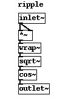
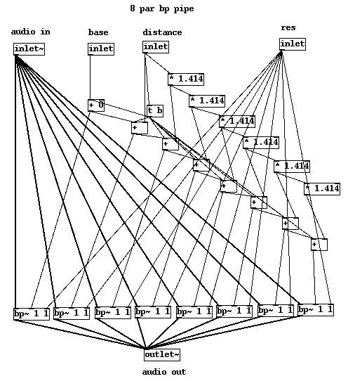
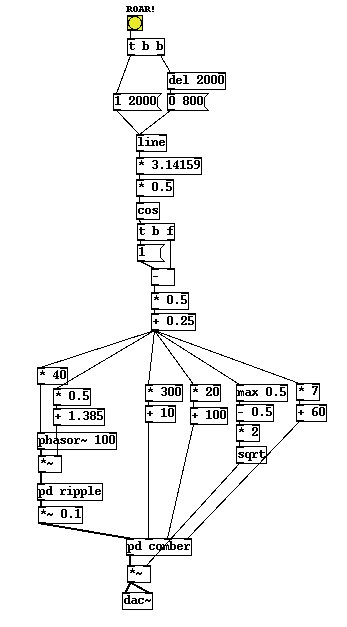

I've based this on a lion or big cat growl, which is a standard starting point for many of the "monsters" in films and games. The core of the sound is a "ripple" waveform. If you take a balloon and inflate it fully and holding the balloon neck tightly in two places release some air, it will produce an almost perfectly periodic relaxation waveform. But if you loosen the tension it begins to oscillate in a more complex mode to make a farting noise as well as reducing the pitch. Speech and many sounds that mammals make are based on a similar physical process. Air moves across the vocal cords or laryngeal membranes which loosen or tighten to control their pitch and tone. Lions and tigers (and bears oh my!) don't purr, and apparently cats that purr never roar. This is almost certainly due to the position of the components of the larynx which varies between animals, in particular the thyroid cartilage and arytenoid cartilages which control the openness and tension of the vocalising membranes. A big cat has a quite loose membranes and quite different glottis to a human. Our glottis is lowered which makes a wider range of sounds possible and probably accounts for our ability to speak. When a lion roars it expels a lot of air from its lungs. One possibility is that the sound is a signal to demonstrate the creatures fitness, it's lung capacity as a warning to others. When it growls and roars the tension in the larynx is just right to create a complex ripple signal.
Normally, in speech synthesis we create an exciter-resonator system, the former being a regular periodic pulse wave and the latter a set of parallel bandpass filters constructed to mimic the resonance of the vocal tract for articulation. We will use a standard vocal tract resonator based on a comb filter but extended to mimic a larger animal than a human. For the excitation signal however we will use a ripple waveform and move its complexity throughout the sound.
Taking a normal [phasor~] gives us a periodic signal that will be the base frequency of the sound. We apply a [wrap~] function to the square of the phasor and then take the square root of the result. For a phasor in its normal range of zero to one the circuit has no effect (the square of one is one, the wrap of one is one, and the root of one is one). But if we add a little extra amplitude to our phasor something interesting happens. Values above one quickly grow and they are wrapped back on themselves to produce new scans in the 0-1 range. Taking the cosine of the square root of these results in little groups waves that aren't unlike the movement of a critically damped membrane clamped at two ends, basically we get a farting noise. (This is a nonlinear synthesis - a different way of doing FM and very like FM in the sounds we get. Basically we get a way to change the complexity of a wave while keeping its frequency steady.) The real lions roar has a much more elaborate signal since it is a real membrane vibrating over its whole area giving us the superposition of vibrations on many fronts, but our simple ripple source will give us a good enough starting point for further experimentation.

To simulate a pipe or tube a group of 8 parallel bandpass filters are used. The spacing of each band is not linear but increases in the ratio of (1.414 * D), where D is a distance constant to be added to each space between the current and previous band. We have a resonance inlet which controls the resonance of all filters. The more resonant we make them the more the tube will seem to ring, and the more it will seem to have a "wet" sound. Finally we offset all of these frequencies by a fixed amount to set the "base" of the format we produce. Varying these parameters obtains us a tube that we can vary in width, length and reflectivity. A base and spacing of a few hundred Hz and a Q of about 60 gets us something a bit like an animal roar.

All we do is connect the larynx to the vocal tract by feeding the ripple source into the bandpass filters. We can get a range of growling "ahh" like outputs from the system by changing the phasor level and the tract parameters.
Changing inputs correctly over time is essential to making this patch work. A roar seems to follow a familiar trigonometric curve, rising fast and slowly converging on a peak before falling off in roughly the same shape, only a little more quickly. A linear rise and fall seems to make the lion sound lazy and not really very scary. Having the rise and fall be symmetrical isn't quite right either, he builds up power in the roar in a gentle curve but neither stops abruptly nor leaves the roar trailing too long, a ratio of about 2:1 seems right. Starting with a normalised line segment that rises over two seconds and falls away over 800ms we derive a half cosine cycle. The control rate [cos] is not normalised like the audio rate [cos~] object used with a [phasor~] so we have to shift our line into the range of zero to half pi, done with the [* 3.1415926] and [* 0.5] functions. We take the reciprocal of this because it's out of phase, it starts at one and goes down to zero and back, so we need to flip it. Finally I've shifted it's range again in this patch, which is not essential in any way, just a feature of the way I designed the values in and had to make a little tweak. All the other parts are to place the range, minimums and maximums of our parameters.
